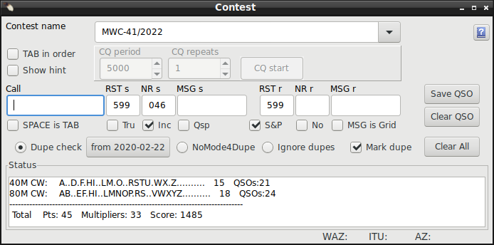
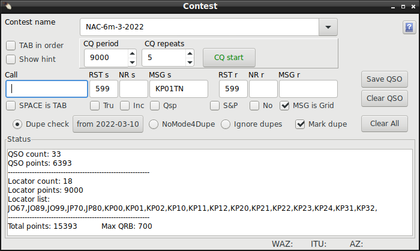
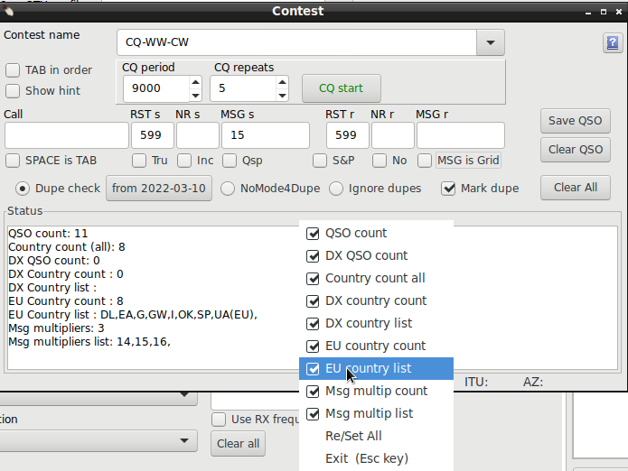
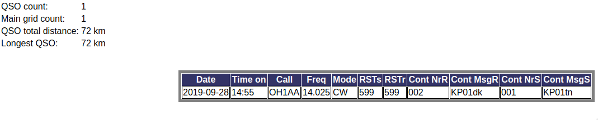

|
WARNING!
Backup your data often! BACKUP your log directory at the end of EVERY session!
All that you need to backup and store in a safe place is the log database directory
located in the ~/.config/cqrlog/database folder, or you can enable the autobackup function
in Preferences. This autobackup function creates an ADIF file with a backup of your log.
/td>
|
CQRLOG for LINUX by OK2CQR & OK1RR

Contest support
You will find contest selection from NewQSO/Window dropdown menu. Contest support of Cqrlog is very limited, but will serve you well if you just
like to take a part to contest without winning in mind.
Contest window is just a "child form" for NewQSO to make qso logging faster when working in contests.
With Tru and Msg is Loc setting it is useful also in VHF, UHF, SHF Tropo, Es etc. openings for fast qso
logging. Perhaps also in some other operations like WWFF activations.
Note: This is NOT a contest logging add-on!!! It is a contest-notepad.
It is meant to be a tool for "Sunday contesters working in Tourist Class". Do not expect wonders!
When contest window is open NewQSO has contest exchange fields visible. You may have to stretch NewQSO window horizontally to see them.
You do not normally need NewQSO window during contest.
Only need for NewQSO is in case you have to edit an already worked qso.
Select qso normally via QSO list and press edit QSO button and you are able to edit qso, also the contest message part of it.
Repeat: NewQSO is not meant to be used during contest qso feeds. All new qsos are entered via contest window.

RECOMMENDATION:
Make new log for each contest, consider not to allow qrz/hamqth search, it may slow down qso feed.
It might be a good idea to have two logs the "contest" that is used during a contest and then cleared for new contest and the other as
"contest archive" where contents of "contest" are moved with adif export after Cabrillo log is sent.
Benefit of having "contest" log with one contest is also that you get DXCC statistic right after cursor leaves callsign column. You can place contest window just above NewQSO/DXCC statistic.(see pic above).
Contest window has a simple dupe check that turns typed duplicate callsign bold red printed. If you save a duplicate qso it is marked as "/D" in "RST sent" field.
When doing Cabrillo export it is operator's duty to decide what to do with "/D" reports
To get duplication check working properly you must either create a new log for every contest or set dupe start date (I.E. contest starting day) with button "from YYYY-MM-DD"
Hotkeys:
Hotkeys work same way as with New QSO window.
- 2x ESC clears all fileds
- Note: 1x ESC returns cursor back to Call-field (if cursor is in some of the other fields like RSTr) and places cursor at the end of callsign for possible repairs.
It also halts CW memory output if it is just running.
- F1..F10 send CW or VOICE messages depending on used mode.
- TAB-key moves cursor between fields. (may also be SPACE key, if set)
- Ctrl+Tab will set S&P mode
- Shift+Tab will reset S&P mode
Contest window has following fields and checkboxes:
- Contest name Selection box has a list of predefined contest names. When selecting one and leaving Contest name combo box name will be cut from "|"(including it) that separates contest name and explanation.
You can also type contest name here if it is not in list. Be sure you do not use "|" character(s) in name because program will cut name from the first one found.
RECOMMENDATION:
Add date to contest name if you keep many contests in same log. That way QSO list/Filter/Contest filter can separate contests by name.
- Tab in order when checked overrides all other Tab settings (see below) and Tab Order is: Call-RSTs-NRs-MSGs-RSTr-NRr-MSGr-SaveQSO-ClearAll
- Show hint when checked shows help text of object that mouse cursor currently points
- CQ panel is visible when S&P is not checked (CQ calling mode)
- CQ period timer period in millisecons to send one CQ+listen (5000 - 50000, 5-50sec)
To adjust: Set repeats=1, press CQ start, adjust period value so that F1 has time to run + listening time
- CQ repeats repeat period how many times CQ period is repeated (1 - 20)s
- CQ start start/stop repeated CQ calling. Shorcut key: Shift+F1.
Pressing ESC stops timer and CW send. It can not stop voice keyer script.
Also writing anyting to Call will stop running timer and CW sending.
- Last Cq Freq will show last used CQ frequency and mode. CQ frequency and mode is stored when F1 memory is launched either from keybord or from Memory keys F1 button.
Click on frequency or mode reading or Ctrl+L will restore rig to that frequency and mode. This value is not stored and clears when contest window is closed.
- Call when you leave this field callsign is moved to NewQSO. Callsign turns BOLD RED while typing if it is duplicate (and duplicate check is active).
- SPACE is TAB when checked space bar acts like TAB-key moving to next field. Note:This prevents typing space (perhaps needed in MSG fields).
- Dupe check Default checked. If you use same log for several contests, and/or other working, set the contest start date with from YY-MM-DD button.
if NoMode4Dupe is selected duplicate check allows qso with same station in same band if mode differs.
if Ignore dupes is selected it will ignore duplication check completely.
When dupe check is active and callsign is found as duplicate, but still saved, program will add /D to RST sent.
It is then operator's duty to clean or leave /D to exported Cabrillo log.
- RST s RST sent. Can be changed.
Note: defaults to 599 (CW) 59(phone). If rig mode is changed you get corresponding RST with 2xESC.
It also changes when cursol leaves call column. So do not worry when working mixed mode contest!
- Tru means you like to exchange true reports. Makes Tab order to stop at RST (s & r) fields. Useful in some high band contests, Es and tropo openings.
- NR s serial number to send.
Note: you can type only numbers to NR s field.
- Inc if checked it will auto increment serial number. You may change this number at any time. Increment goes on from typed number.
- MSG s sometimes you may need an additional message with number, or just a message with no number.
On high band contests you may type your locator here.
- Qsp if checked makes TAB order stop at MSG s. Content of MSG s is taken from last logged MSG r. Cursor is placed at the end of message for possible edit.
For contests where you have circulating message: At 1st qso you set your own word to send, after that you send previously received word as your next own message.
- S&P When Search & Pounce is checked operator launces all CW/Voice messages manually.
When S&P is not checked (in RUN mode) program launches message F2 when cursor enters one of RSTr, NRr, or MSGr columns. This way also if true reports are selected F2 is sent after your message is ready.
In case duplicate checking is enabled and callsign is duplicate, message F3 is launched instead of F2 and it happens always when cursor leaves callsign column.
When Enter or Save qso button is pressed program will send message F4.
Message F1 can be used for CQ that is manually launched.
When phone modes are used messages are lauched same way but you need very special voice script if you want to include worked station's callsign into F2 and F3 messages, but launcing F4 at QSO save may be useful.
NOTE: When S&P checkbox changes state then also CW memory sets are switched between "S&P" and "Run".
See more about CW messages how to define messages with macros and save/load different setups of CW messages.
- RST r RST received. Default to 599 (CW) 59 (phone). Can be changed.
Default rst for CW and phone is created from rig's current mode. If you do not have cat controlled rig select "Hamlib dummy #1" as rig and set correct band and mode from TRXControl's band buttons.
- NR r serial number you receive.
Note: you can type only numbers to NR r field.
- No if thre is no serial number in contest this setting changes tab order so that it jumps over, directly to MSG r.
- MSG r message you receive
- MSG is Grid If 'MSG is ...' is checked then message will be logged in SRX_String AND ALSO to selected NewQSO column.
By default Msg is Grid. It can be changed with right mouse click on the text.
If checked then input will turn red if character count is odd. Maximum of 6 characters locator can be entered.
If MSG is Grid but the entered locator is not valid it will NOT be copied to NewQSO/Grid column and stays only in Srx_String.
In case of MSG is State and callsign is detected by prefix to be a Germany callsign srx_string is copied to DarcDOC column, orherwise to State column.
In other cases MSG is copied to correspondig NewQSO column.
NOTE: After selecting 'MSG is ...' remember also to check the checkbox to get it activated!
Buttons you really do not need (you should NOT use mouse when working contest!):
- Save QSO Save QSO button at NewQSO, increments NR and clears all fields.
Note: pressing ENTER at any time after cursor is out from Call column does the same.
- Clear QSO Clear all QSO information.
Note: Pressing 2x ESC key does the same.
- Clear all Clear all fields. Usefull when starting a new contest to remove all saved settings.
All settings, including contest name, are saved when closing contest form. When opening cqrlog and contest form again after rest period you can directly continue contest working.
Typical contest qso goes like this:
Type callsign->press TAB->type contest rxnumber->press TAB->type contest message->press ENTER.
Or hit ENTER after rxnumber if no additional message is exchanged. When S&P is checked you maybe need to launch some Cw messages manually.
Remember that pressing ENTER key at any column saves qso with existing values. How ever there must be
callsign of least three characters long. Sent/Received number and message(s) are not needed.
There is no need to use the mouse. Keep your hands on keyboard (and possible on CW key / PTT (if not foot pedal in use)). It is faster.
Contest numbers and messages are saved in log in their own columns. Use preferences/Visible columns to show them in Qso list.
CW messages can be used for sending contest messages. Look at help section CW Operation
how to use macros in messages.
NOTE: If you use macro that sends whole contest message (%xrs = RST, STX, STXString) message will skip empty ones. This way %xrs works for all contests.
Status view support
NOTE: If you have one log called contest that you clear always before contest, to have just qsos of that contest, and after contest you move all qsos
with adif export to another log called archive you can view contest status afterwards from that log if you have used unique contest names I.E. added contest start date to name.
Find contest with Filter/Contest filter and copy name from selection list box and paste it to Contest window. You do not have to activate contest filter to see the status of that contest.
OK1WC memorial contest status is supported.

If contest name has "mwc" or "ok1wc" included (no case sensitive) then status counting is activated. At the start of contest (and any oher time when no qso to save) it can be seen by pressing 2xESC.
After saving a qso Status view is updated.
TRXControl must show that rig is on 80m or 40m band. If you do not have cat controlled rig select "Hamlib dummy #1" as rig and set correct band and mode from TRXControl's band buttons.
Only bands 80M and 40M and mode CW are counted (See rules of contest).
Nordic Activity Contest (NAC) status is supported.

If contest name has "nac" included (no case sensitive) then status counting is activated. At the start of contest (and any oher time when no qso to save) it can be seen by pressing 2xESC.
After saving a qso Status view is updated.
Common status is supported.

If contest name has any name that does not fit rules of two above status counting is activated. At the start of contest (and any oher time when no qso to save) it can be seen by pressing 2xESC.
After saving a qso Status view is updated.
There are several items shown in Status display. You can control them by left click below text Status (but above status display itself).
The DX and own continent counts (EU in picture) are defined against your callsign in preferences/station/call.
To see Status section you may need to stretch the bottom part of Contest window.
NOTE: Status counting may have errors! It is just for showing progress of contest, not to show final score.
After contest
Most contests expect Cabrillo log format. Cqrlog has a limited support of Cabrillo exports. Mostly enough for a Sunday contester.
In case you want to use external Cabrillo program you have to make ADIF export of qsos
and then use another program.
I found nice adif2cabrillo program for Linux from http://users.telenet.be/on4qz/ that supports ADIF importing.
Starting is bit complicated:
You need to compile it from source. Qt5 with qmake (called qmake-qt5 if your distro is Fedora) is needed to be able to compile
it.
Then there are no templates for different contests. You have to create them, but after that it serves you well!
It accepts nicely exported ADIF format from cqrlog and dig out STX and SRX as expected.
ADIF exports fields to right tags.
<RST_SENT:3>599<STX:3>001
<RST_RCVD:3>599<SRX:3>002
<RST_SENT:3>599<STX:3>003<STX_STRING:2>SA
<RST_RCVD:3>599<SRX:3>003<SRX_STRING:2>dd
<RST_SENT:3>599<STX:3>002<STX_STRING:2>SA
<RST_RCVD:3>599<SRX:3>003<SRX_STRING:2>kb
<RST_SENT:3>599<STX:3>001<STX_STRING:2>SA
<RST_RCVD:3>599<SRX:3>002<SRX_STRING:2>SB
HTML export will look like this:
